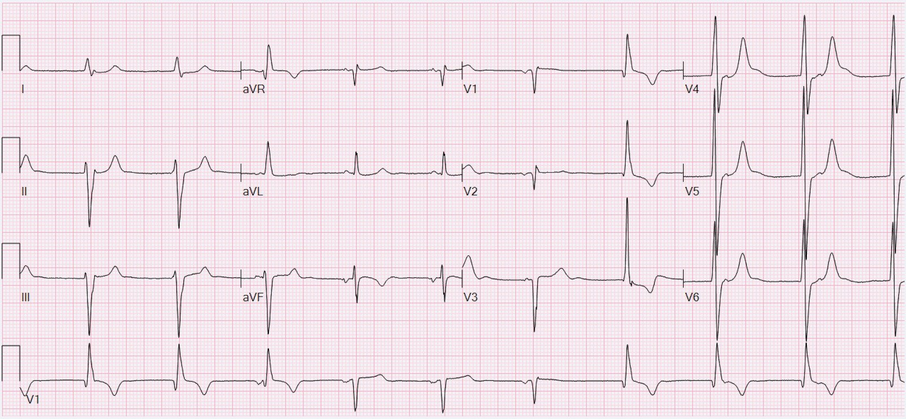
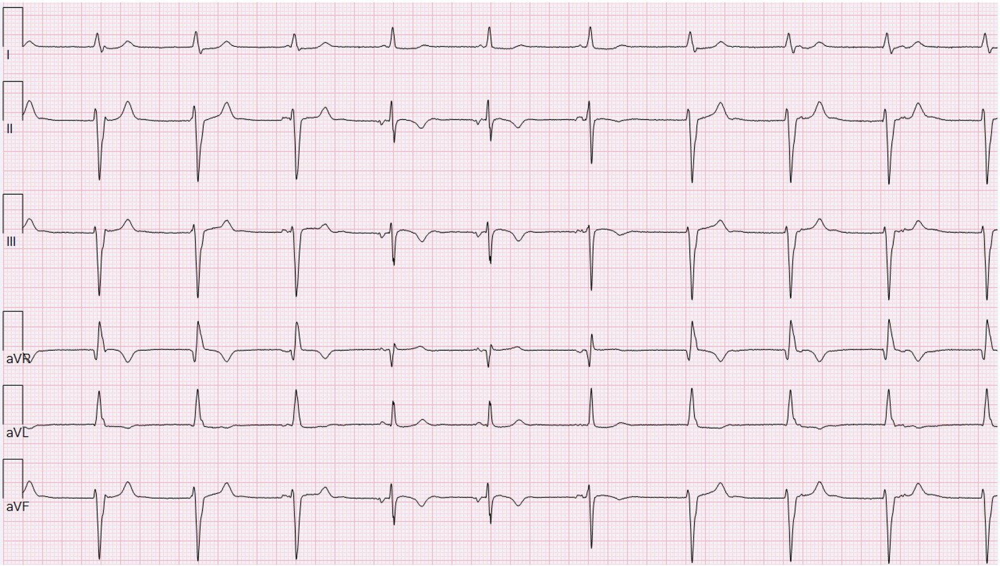
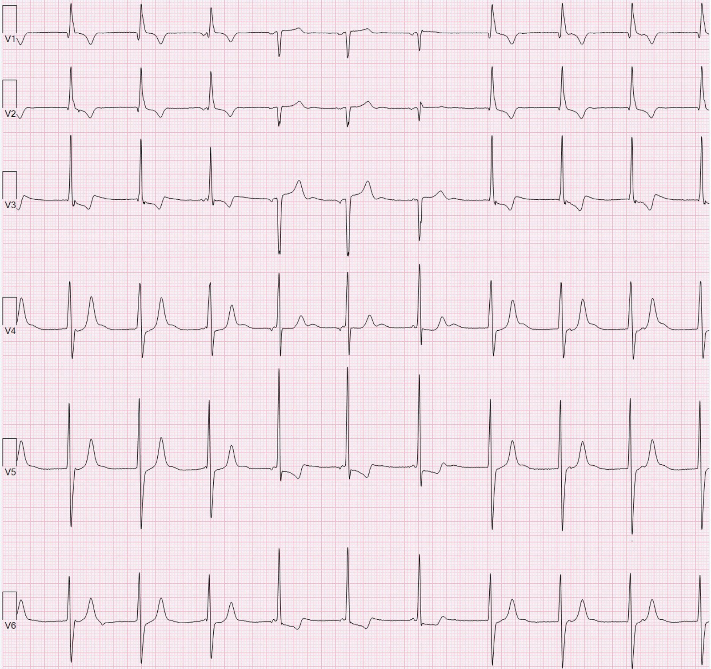
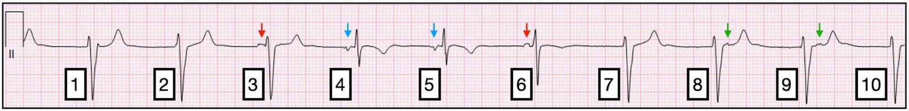
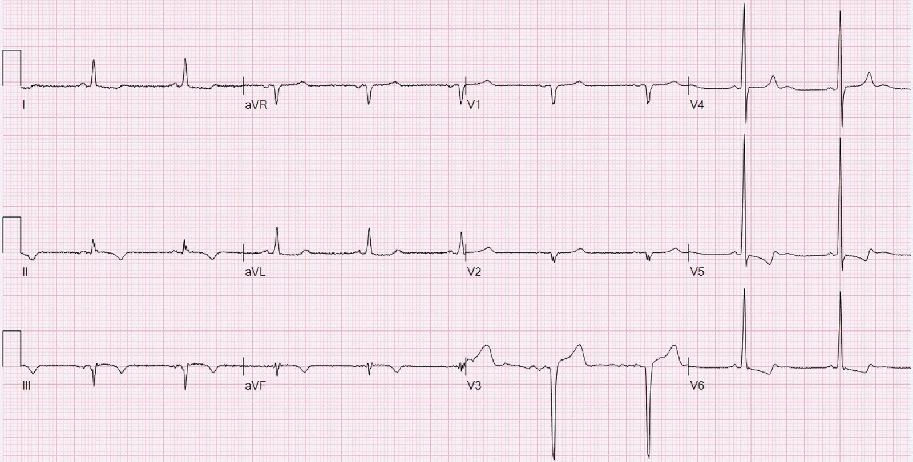
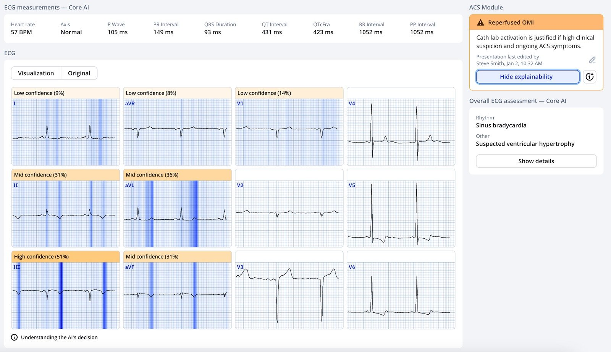
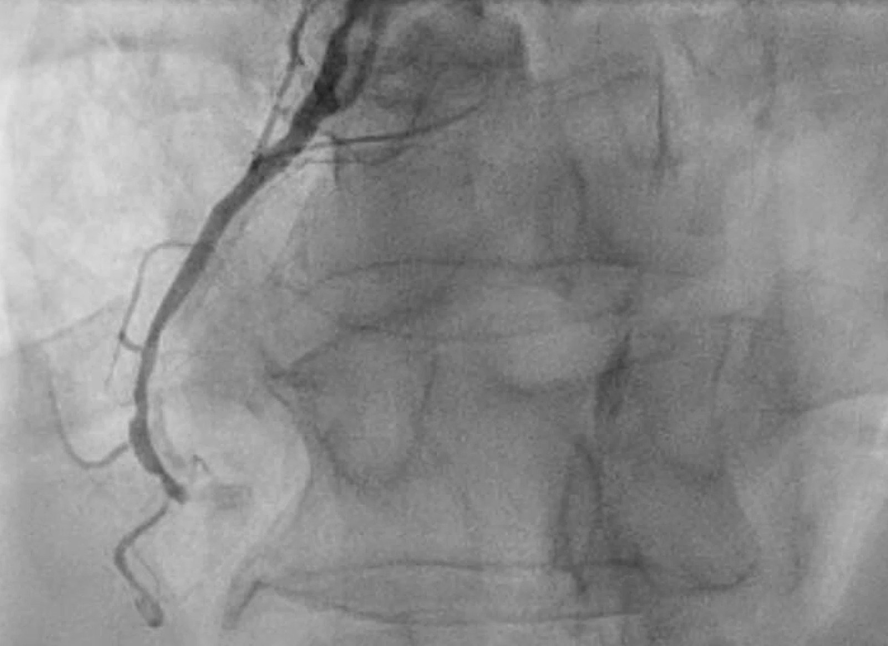
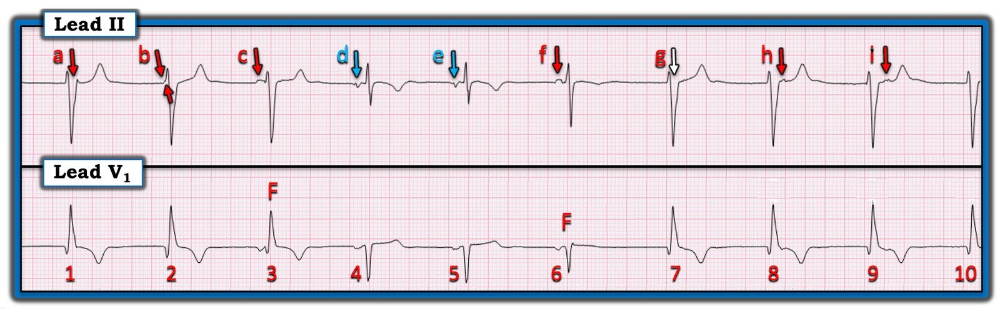
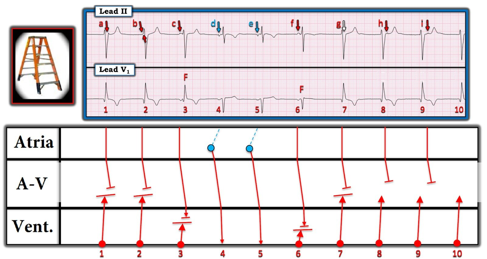

05/01/2025 — Việc cố gắng xác định động mạch thủ phạm dựa trên điện tâm đồ có quan trọng không?
Bản dịch tiếng Việt của bài "Is it important to try to determine the culprit vessel based on ECG?" – Dr. Smith’s ECG Blog. Giữ nguyên toàn bộ 10 hình ảnh và 1 video của bản gốc.
Tác giả: Willy Frick
Một người đàn ông ngoài 60 tuổi, có tăng huyết áp và tiền sử đột quỵ, đến viện vì đau ngực dữ dội kiểu bóp nghẹt kéo dài ba ngày. Ông kể có những cơn đau ngực từng lúc trong vài tháng gần đây, nhưng chưa bao giờ kéo dài lâu như lần này. Ông mô tả cơn đau ở sau xương ức, lan ra cánh tay phải.
Với tất cả những thông tin này, ngay cả trước khi xem điện tâm đồ, chúng ta đã có thể khá tự tin rằng mình đang đối mặt với nhồi máu cơ tim do tắc (OMI).


Bạn nghĩ gì?
Ngay lập tức, ta nhận thấy có những nhóm sóng R khác nhau. Trên dải nhịp V1, R4 và R5 trông như các nhát dẫn truyền tự nhiên (natively conducted). (Lưu ý, chúng không phải nhịp xoang vì sóng P lộn ngược ở aVF. Trông giống nhịp nhĩ thấp.) Các nhát còn lại rộng hơn và có nguồn gốc khác — sẽ bàn thêm ở phần sau. Đáng tiếc là, dù các nhát dẫn truyền tự nhiên là những nhát tốt nhất để đánh giá thiếu máu cục bộ, chúng ta chỉ có vài nhát! Hay là không phải vậy?
Mặc dù điện tâm đồ in ra ở Bắc Mỹ thường chỉ hiển thị 2,5 giây của mỗi chuyển đạo cộng với một hoặc nhiều dải nhịp 10 giây, phần lớn máy thực ra thu dữ liệu 10 giây của cả 12 chuyển đạo! (Gần đây tôi được Dave Richley cho biết rằng các máy hiện đại thu 10 giây dữ liệu từ các chuyển đạo I và II cùng V1-V6. Chúng không thực sự đo III, aVL, aVR, aVF mà tính toán ra các chuyển đạo này.)
Bình luận của Smith: đây là một trong những trở ngại lớn mà Powerful Medical phải vượt qua khi số hóa hình ảnh điện tâm đồ 12 chuyển đạo: mọi bản ghi điện tâm đồ kỹ thuật số đều có 10 giây cho mỗi chuyển đạo, nhưng hình ảnh chỉ hiển thị 2,5 giây. Như vậy 75% hình ảnh bị thiếu! Phần lớn các nhà khoa học máy tính trong giới điện tâm đồ 12 chuyển đạo cho rằng điều đó là bất khả thi. Nhưng họ đã làm được. Họ còn tạo ra được tệp XML chứa 10 giây của mỗi chuyển đạo từ các tệp JPG, PNG hay PDF này. Điều này rất quan trọng vì AI cần tệp XML để phân tích.
Ca bệnh tiếp diễn
Tôi thích tận dụng điều này bằng cách mở điện tâm đồ trong phần mềm đọc và định dạng lại thành 12 kênh nhịp.




Trước khi đọc tiếp, hãy thử tự xác định nhịp. Diễn giải của tôi được mô tả dựa trên dải nhịp chuyển đạo II bên dưới, có chú thích cho rõ.


- Nhát 4 và 5 có QRS hẹp nhất. Đây hẳn là các nhát dẫn truyền tự nhiên. Lưu ý rằng các sóng P được chỉ bằng mũi tên xanh dương có trục hướng lên trên (tức là đảo ngược ở các chuyển đạo dưới). Nhịp xoang có trục hướng xuống dưới, nên đây hẳn là nhịp nhĩ thấp.
- Nhát 1-2 và 7-10 rộng hơn, đồng dạng và đều. Trong bối cảnh OMI đã tái tưới máu (tôi sẽ quay lại điểm này), chúng ta thường gặp nhịp tự thất gia tốc (AIVR). Phức bộ QRS này rộng gần đúng 120 ms, thuộc phía hẹp đối với nguồn gốc thất. Và AIVR thường có tần số gần với 80-110 nhịp/phút hơn. Dù vậy, trong điều kiện bình thường, tần số này sẽ là rất nhanh đối với một nhịp thoát bộ nối hay nhịp thoát thất, vì vậy tôi nghiêng về AIVR.
- Các mũi tên đỏ đi kèm sóng R 3 và 6 chỉ các sóng P có hình thái xoang — dương ở I, II, aVF. (Chúng lộn ngược ở V1 và V2, nhưng có lẽ là do điện cực đặt quá cao.) Ngoài ra, khoảng PR rất ngắn và phức bộ QRS có hình thái trung gian giữa các nhát AIVR. Do đó, đây là các nhát hỗn hợp (fusion beat) [hỗn hợp giữa nhát thất (rộng) và nhát dẫn truyền (hẹp)]. R3 chủ yếu mang hình thái AIVR, còn R6 chủ yếu mang hình thái dẫn truyền từ xoang.
- Các mũi tên xanh lá chỉ hoạt động nhĩ dường như đã bị AIVR “vượt trước” (tức là không dẫn truyền được vì nhát AIVR đến trước). Tôi không nghĩ đây là dẫn truyền ngược dòng vì khoảng RP thay đổi giữa nhát 8 và 9. Nếu hoạt động nhĩ là do dẫn truyền ngược dòng, khoảng từ sóng R đến sóng P ngược dòng nhiều khả năng sẽ giống nhau giữa hai nhát.
Chuyển sang thiếu máu cục bộ, điện tâm đồ cho thấy nhồi máu dưới-sau đã tái tưới máu. Tập trung cụ thể vào nhát 4 và 5, ta thấy:
- Sóng T đảo ngược (TWI) ở II, III, aVF
- Sóng T tái tưới máu thành sau dương quá mức, rõ nhất ở V2-3*
- Sóng T dương soi gương ở I/aVL (lẽ ra chúng ta sẽ thấy chúng đảo ngược do hình ảnh tăng gánh của LVH)
*Một phần của hình ảnh này có thể là sóng T vốn được dự đoán ở bệnh nhân có hình ảnh tăng gánh của LVH. Khó mà chắc chắn, nhưng chi tiết tinh tế này không ảnh hưởng đến chẩn đoán chung.
Quay lại ca bệnh:
Không may cho bệnh nhân, ông đến vào sáng thứ Sáu tại một cơ sở không có phòng thông tim (cath lab) trực cho đến thứ Hai tuần sau. Bác sĩ tim mạch hội chẩn ghi nhận cơn đau đã “gần như hết.”
Hãy nhớ rằng trong OMI, đau ngực là dấu hiệu của nhồi máu đang diễn ra. “Gần như hết” nghĩa là CHƯA hết. Đang có nhồi máu tiến triển. Hoặc có đau ngực do thiếu máu cục bộ, hoặc không.
Bệnh nhân được dùng liều nạp aspirin và clopidogrel, bắt đầu truyền heparin liên tục, với kế hoạch thông tim vào thứ Hai. Ghi chép bệnh án viết rằng “nếu triệu chứng trở nên kháng trị,” bệnh nhân sẽ cần được chuyển viện để thông tim khẩn trong cuối tuần. (Kháng trị còn có nghĩa gì nữa nếu không phải là đau ngực nhiều ngày không dứt, vẫn kéo dài sau khi đã bắt đầu điều trị nội khoa?) Troponin I độ nhạy cao (hsTnI) ban đầu là 14.114 ng/L, lần lặp lại 12.651 ng/L, không xét nghiệm thêm. Siêu âm tim cho thấy giảm động thành dưới. Bệnh nhân được đánh giá lại vào thứ Bảy, không thay đổi kế hoạch.
Vào Chủ nhật, bệnh nhân than khó thở và đau thắt ngực khi đi lại. Điện tâm đồ ghi lại được trình bày dưới đây.


Một lần nữa, ta thấy hình ảnh tái tưới máu ở vùng dưới và vùng sau. Có một chút ST dạng vòm (coving) ở chuyển đạo III và aVF, gợi ý một phần thiếu máu cục bộ đang diễn ra, phù hợp với cơn đau dai dẳng.
Queen of Hearts nhận diện đây là OMI đã tái tưới máu:


Bản ghi này được khoa tim mạch đọc là “gợi ý nhồi máu cơ tim ST chênh lên thành trước.” Đúng vậy, bạn không đọc nhầm đâu. Điều đó được viết tay ở hai chỗ trong ghi chép bệnh án, nên chắc chắn không phải sơ suất.
Smith: đúng vậy, nó gợi ý nhồi máu cơ tim thành trước — nhồi máu thành trước CŨ. Nhưng cũng gợi ý OMI thành dưới bán cấp.
Có lẽ bác sĩ tim mạch đã cố so sánh các bản ghi liên tiếp và nghĩ rằng có ST chênh lên (STE) mới ở V3 mà không nhận ra rằng điện tâm đồ trước đó cho thấy AIVR và các nhát hỗn hợp ở V3. May mắn cho bệnh nhân, cách đọc sai này ít nhất cũng giúp ông được chuyển khẩn đến một cơ sở có khả năng thông tim, nơi ông được chụp mạch vành khẩn.
Nếu quan tâm, bạn có thể xem chi tiết phim chụp mạch vành trong cẩm nang chụp mạch vành của tôi, nơi bạn sẽ tìm thấy nhiều thông tin hơn về chụp mạch vành nói chung.
Đây là góc chụp LAO chếch đầu (cranial) cho thấy dòng chảy TIMI 0 ở RCA đoạn giữa đến đoạn xa


Phim chụp mạch được đọc là tắc hoàn toàn mạn tính (CTO) của RCA. (Từ điện tâm đồ, chúng ta biết RCA thực ra mới là thủ phạm cấp!) Bệnh nhân được đặt stent phủ thuốc (DES) ở LAD đoạn giữa và DES ở nhánh chéo, không can thiệp vào RCA thủ phạm.
Đáng tiếc là PCI nhầm mạch (wrong vessel PCI) rất phổ biến. Trong một đoàn hệ tiến cứu gồm các bệnh nhân nhập viện vì nhồi máu cơ tim không ST chênh lên (NSTEMI), 27% bệnh nhân được PCI chỉ được can thiệp vào các động mạch không liên quan. Cũng trong đoàn hệ này, gần MỘT NỬA (46%) hoặc bị chọn nhầm động mạch liên quan đến nhồi máu, hoặc chẩn đoán cuối cùng ngay từ đầu đã không phải do thiếu máu cục bộ!
Không có gì ngạc nhiên khi bệnh nhân vẫn đau dai dẳng sau PCI, kéo dài suốt đêm. Ngày hôm sau, ông được đưa trở lại phòng thông tim, nơi một bác sĩ can thiệp khác chụp lại mạch vành. Bác sĩ thứ hai mô tả RCA bị tắc cấp do huyết khối và đặt ba stent chồng nhau. Hình chụp cuối cùng được trình bày dưới đây.
Những điểm cần học:
- Phiếu kết quả thông tim mô tả một tổn thương là “CTO” không có nghĩa là nó đúng là CTO. Nó vẫn có thể là thủ phạm cấp.
- PCI nhầm mạch rất phổ biến, xảy ra ở khoảng 1 trong 4 ca NSTEMI.
- Chụp mạch vành có những giới hạn cố hữu. Khoảng một nửa số chẩn đoán NSTEMI là không chính xác.
- Như mọi khi, chăm sóc OMI hiệu quả đòi hỏi phải đặt điện tâm đồ trong bối cảnh triệu chứng của bệnh nhân.
Đây là một video giải thích khác về một ca bệnh trong đó điện tâm đồ đóng vai trò then chốt để tìm ra thủ phạm:
Right Ventricular MI seen on ECG helps Angiographer to find Culprit Lesion (Nhồi máu thất phải thấy trên điện tâm đồ giúp bác sĩ chụp mạch tìm ra tổn thương thủ phạm)

===================================
BÌNH LUẬN CỦA TÔI, bởi KEN GRAUER, MD (5/1/2025):
===================================
Nhận thức rằng nhiều máy điện tâm đồ hiện đại không hiển thị toàn bộ dữ liệu mà chúng thu được khi in ra một điện tâm đồ là một khái niệm còn rất ít được tận dụng. Dù vậy, việc khai thác phần lớn dữ liệu dư thừa chưa dùng đến này bằng cách thường quy hiển thị từng nhát ở từng chuyển đạo trong 12 chuyển đạo không chỉ tỏ ra rườm rà — mà còn không cần thiết ở đại đa số bản ghi vốn không có mức độ biến đổi hình thái lớn như ở ca hôm nay.
- Ca hôm nay của BS. Frick minh họa một ngoại lệ đối với nhận định chung nêu trên. Bằng cách định dạng lại dữ liệu thu được thành 12 kênh nhịp — BS. Frick không chỉ giúp việc diễn giải điện tâm đồ 12 chuyển đạo ban đầu của ca hôm nay dễ dàng hơn — mà còn giúp hiểu rõ cơ chế của nhịp ban đầu đầy thú vị trong ca này.
- Tôi tập trung bình luận của mình vào việc tìm hiểu cơ chế này.
Nhờ BS. Frick — tôi có được một dải nhịp chuyển đạo II dài. Trong Hình 1 — tôi ghép chuyển đạo II được trích xuất này với dải nhịp chuyển đạo V1 đã hiển thị sẵn để giúp làm rõ hoạt động nhĩ trong bản ghi ban đầu của ca hôm nay.
- Nếu BS. Frick không định dạng lại 10 nhát trong bản ghi ban đầu của ca hôm nay thành 12 kênh nhịp — tôi sẽ không bao giờ nhận ra rằng có 2 ổ nhĩ trong nhịp ban đầu. (Dù hình thái sóng P xoang có thể thay đổi đôi chút từ nhát này sang nhát khác — tôi sẽ không nghĩ có mức thay đổi nhiều như ta thấy đột ngột ở chỉ 2 nhát trong nhịp ban đầu của ca hôm nay).
- Như BS. Frick đã nêu — các sóng P đi trước nhát #4 và #5 chủ yếu âm ở chuyển đạo II, do đó có lẽ có nguồn gốc nhĩ thấp (các sóng P có mũi tên XANH DƯƠNG trong Hình 1).
- Các mũi tên ĐỎ trong Hình 1 đánh dấu các sóng P xoang dương ở chuyển đạo II. Trong số này, sóng P c và f là những sóng P duy nhất thấy rõ. BS. Frick đã chỉ ra sóng P h và i xuất hiện ngay sau nhát #8 và 9 ở chuyển đạo II (dù chúng không thấy được ở chuyển đạo V1).
- Với các sóng P xoang f, h và i — có vẻ hợp lý rằng một sóng P xoang đúng lúc khác gần như chắc chắn đang ẩn trong phức bộ QRS của nhát #7 (mũi tên TRẮNG).
- Được thôi thúc tìm kỹ hơn nữa các sóng P “ẩn” — chỗ gấp khúc nhẹ ngay trước QRS của nhát #2 không có ở các nhát khác (gợi ý mạnh rằng b là một sóng P xoang đúng lúc khác).
- Cuối cùng — khía nhỏ tinh tế giả dạng một sóng r’ ở cuối QRS của nhát #1 nằm ở vị trí hoàn hảo để che giấu một sóng P xoang đúng lúc cuối cùng. (Nhịp này đơn giản là hợp lý hơn nếu ta giả định hoạt động nhĩ đều đặn hơn — và các dao động nhĩ được đánh dấu ủng hộ giả thuyết này).
Trong khi hoạt động nhĩ được thể hiện rõ nhất ở dải nhịp chuyển đạo II dài của điện tâm đồ ban đầu — tôi cho rằng sự biến đổi hình thái QRST được thể hiện rõ nhất ở chuyển đạo V1 dài.
- Như BS. Frick đã nêu — bệnh lý nền của ca hôm nay là OMI thành dưới cấp — nay đã có sóng T tái tưới máu (thấy rõ nhất ở các chuyển đạo dưới của bản ghi ban đầu này) và có AIVR (nhịp tự thất gia tốc — Accelerated IdioVentricular Rhythm) vốn rất thường gặp như một rối loạn nhịp do tái tưới máu.
- Tập trung vào hình thái QRST ở chuyển đạo V1 của Hình 1 — các nhát #1,2; và 7,8,9,10 đều rộng và không có sóng P nào đi trước. Đây đều là các nhát thất với tần số đều và hơi gia tốc ~60/phút (hoàn toàn phù hợp với AIVR).
- 2 sóng P nhĩ thấp ( = d và e) được dẫn truyền bình thường xuống thất (tức là, nhát #4 và 5 là các phức bộ QRS hẹp).
- Nhát #3 và #6 là các nhát hỗn hợp (F). Chúng ta biết điều này — vì cả hai nhát này: i) Biểu hiện hình thái QRS và sóng T trung gian giữa nhát trước và nhát sau nó (tức là, hình thái QRST của nhát #3 trung gian giữa nhát #2 và #4 — và hình thái QRST của nhát #6 trung gian giữa nhát #5 và #7); — và, ii) Cả hai nhát #3 và 6 đều có sóng P đi trước, có cơ hội dẫn truyền một phần (và đúng như dự đoán với nhát hỗn hợp — nhát #6 có khoảng PR dài hơn một chút nên sóng P xoang đi trước nó có thêm chút thời gian để dẫn truyền trong thất, đó là lý do nhát hỗn hợp #6 trông giống các nhát dẫn truyền bình thường #4 và 5 hơn so với nhát #3 vốn có khoảng PR đi trước ngắn hơn).
Vì sao AIVR có thể xuất hiện trong bản ghi ban đầu này?
- Trong khi khoảng R-R của các nhát thất trong Hình 1 khá hằng định — tần số nhĩ của các sóng P xoang lại thay đổi đôi chút. Kết quả là — sự chậm lại của tần số sóng P xoang tạo điều kiện cho nhịp thoát nhĩ thấp hoặc AIVR xuất hiện từng lúc.
- T.B. (P.S.): Như thường xảy ra — có thể có độ trễ nhẹ trong sự xuất hiện từng lúc của AIVR. Nhưng “chủ đề” của nhịp ban đầu này là tái tưới máu OMI dẫn đến AIVR hơi gia tốc, nói chung xuất hiện vào khoảng thời điểm tần số xoang chậm lại. Cần theo dõi lâu hơn mới biết chắc chắn — nhưng sự qua lại giữa phức bộ QRS rộng và hẹp gần giống như những gì thấy trong phân ly nhĩ thất đồng nhịp (isorhythmic), dù bị phức tạp thêm bởi nhịp thoát nhĩ thấp.


Giản đồ bậc thang (laddergram) tôi đề xuất:
- Các sóng P xoang a,b và g không được dẫn truyền xuống thất — vì các nhát thất #1,2 và 7 đã khiến vùng nút AV trơ với các xung động trên thất.
- Các sóng P xoang h và i không được dẫn truyền xuống thất — vì các sóng P này xuất hiện sau QRS của nhát #8 và 9, trong ARP (thời kỳ trơ tuyệt đối — Absolute Refractory Period).
- Các xung động thoát nhĩ thấp d và e xuất hiện vào đúng thời điểm để có thể dẫn truyền bình thường xuống thất, tạo ra nhát #4 và 5.
- Sóng P xoang c xuất hiện ngay trước QRS của nhát #3. Kết quả là — sóng P này chỉ có thể dẫn truyền một đoạn ngắn trong thất trước khi bị xung động AIVR chặn lại. Vì vậy, nhát hỗn hợp này trông rất giống các xung động AIVR khác.
- Sóng P xoang f có khoảng PR dài hơn một chút so với c. Kết quả là — sóng P này đi sâu hơn vào thất — dẫn đến một nhát hỗn hợp trông giống nhiều hơn các nhát dẫn truyền bình thường #4 và #5.

